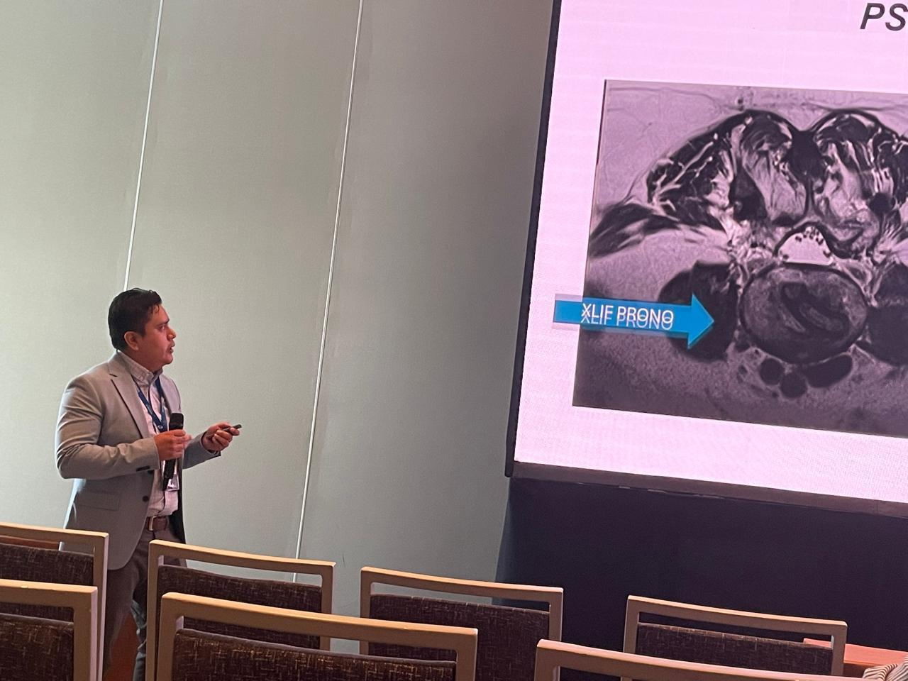

Sobre mí

Desde mis primeros años de formación en la Universidad Autónoma de Aguascalientes, comprendí que la neurocirugía es mucho más que una especialidad: es la posibilidad de transformar vidas.
Mi entrenamiento en el Centro Médico Nacional 20 de Noviembre y mi alta especialidad en cirugía de columna me han permitido combinar la ciencia, la técnica y la empatía para tratar enfermedades del sistema nervioso y de la columna vertebral con un enfoque humano y de vanguardia.
Apasionado por la innovación y la mínima invasión, creo firmemente que la neurocirugía del futuro debe ser más precisa, menos agresiva y siempre centrada en la persona.